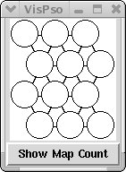
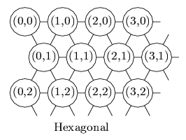
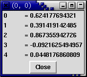
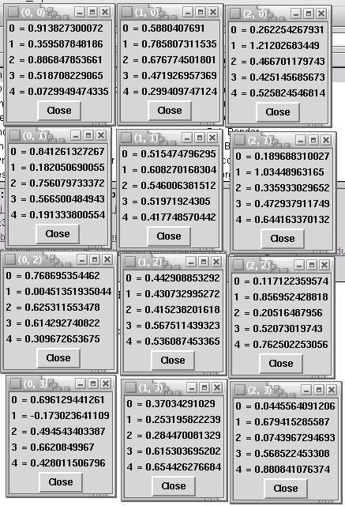
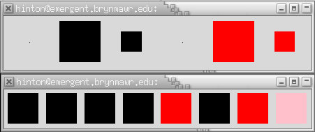
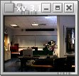

|
|||||||
| [ Home ] | [ Software ] | [ Curriculum ] | [ Hardware ] | [ Community ] | [ News ] | [ Publications ] | [ Search ] |
|
Pyro Module Self Organizing MapThe Self-Organizing Map (or SOM for short) was invented by Teuvo Kohonen around 1981. It is a method of automatically creating a topologically sorted map of representations. To explore this technique we will use software written by Kohonen's research lab. However, we won't use this software directly, but through a Python wrapper class. A wrapper is just a small bit of code that "wraps" around function calls to make those functions available to another system. In our case, the SOM code is written in C and we are, of course, writing in Python. For this module we will use the pyrobot.brain.psom class. We will use the term self-organization to refer to those systems that create their own representation and structures with little or no feedback from an outside teacher. This means that a system is free to represent items as it chooses. Because we don't have a teacher, we must use an unsupervised training procedure. In unsupervised training, we may provide some hints (or feedback) as to how well a system is doing, but we will be agnostic as to how the system solves a problem. We will use the term map to refer to an N-dimensional topological representation. The SOM is a technique for creating such a topological map. It is topological in that similar patterns appear closer to each other, and ones that are less similar are further away. For these experiments, we will be creating 2-dimensional maps, so they will look similar in some ways to the everyday kind of spatial maps we use to get from place to place.
For more information on the C SOM implementation, please see For more information on our implementation of the SOM, see the source code at svn.cs.brynmawr.edu/viewvc/pyrobot/trunk/brain/psom/__init__.py, and click on the topmost (view). To explore exactly what a SOM is and can do for us, let's examine a toy problem.
SOM: Step-by-Step ExampleTo begin examination of the SOM, we will do an interactive example. Start up Python, and enter the following commands at the Python prompt. Later we will create scripts that we can save and reuse. First we load the SOM Python wrapper, called psom:
from pyrobot.brain import psom Don't worry if you see a warning message from Python. Next we load a visualization tool for the SOM, called vis:
from pyrobot.brain.psom import vis Now we are ready to begin creating and training a SOM. First, let's imagine a problem we would like to solve. Let's imagine that we are getting data from a set of sensors and we would like to build a topological map of the clusters of these sensor readings. Let's imagine that we have a robot with 5 sensors, and that the sensors are returning values between 0 and 1. For this simple example, let's create a map that is relatively small, say 3 x 4 units. We create the SOM with visualization ability using the VisPsom class in the vis module:
mysom = vis.VisPsom(3, 4, dim=5) Now you should see a window that looks like the following:  On the top of the window we see a representation of the map. It is 3 columns across, and 4 rows down. The cells are offset because the topology type is hexagonal. There are no numbers showing in each cell indicating that no patterns have been trained to any cell. On the bottom of the window there is a button labeled "Show Map Count". We will discuss that option below. There are two types of topology: hexagonal and rectangular. The hexagonal grid is connected and labeled as shown:  Before we can begin developing the self-organizing map, it must be initialized. Unlike backpropagation neural networks, this training method requires that we know approximately how many patterns we will be training as the learning follows a schedule. We will say 100 patterns for now. Also, we need to supply two learning parameters: the learning rate (called alpha), and the radius of the learning effect around a cell. Let's use 0.02 as alpha, with a radius of 3.0. Therefore, the initialization statement would be:
mysom.init_training(0.02, 3, 100) Now we are ready to begin the self-organization process. However, before we begin training, there is one other property of the interface we can explore. After the initialization, each cell has been assigned a random vector exactly the length of the patterns on which we will be training. We will call these model vectors as they represent the model, or ideal, matching pattern for a cell. To see a cell's model vector simply click on the cell. A window will appear with the title of the window indicating the (x,y) location of the cell. Inside the window is the model vector, top to bottom. If you click on the upper left cell you will see a window that looks similar to the following:  This is a representation of a vector that is approximately [0.6, 0.4, 0.9, -0.1, 0.0]. You may want to compare those values as learning proceeds. Notice that these random values are typically between -1 and 1 even though we didn't say what kind of data we would be training it on! For later testing, open a model vector window for each cell in the map. These windows will remain with these values so that we can compare them later. That might cover your screen, and look something like:  Now, we will begin self-organization. To train the SOM, we present a series of vectors to the map. Currently, the map requires that the vector be represented as a special psom.vector. Recall that we have decided that our imaginary robot has 5 sensors. So, to train the SOM on the pattern [0,1,0,1,1], we enter:
model = mysom.train( psom.vector( [0,1,0,1,1] )) This creates a psom.vector by passing the array of values to it. That vector is then passed to the train() method. The SOM will compare this training vector with all of the model vectors of the map. Recall that each cell has a model vector. The closest vector (computed using a sum of squared differences) is identified, and declared the winner. This winning cell is colored black, and the number in the circle of the cell is incremented by one. Finally, the model vector of the cell, and the surrounding neighborhood cells are adjusted so that next time the model vector will even more closely resemble the training vector ([0,1,0,1,1] in this case.) To see if this is true, click on the black cell and compare the new model vector with the old one. Did the values change to more closely match? How much did each value change? Did they all change by the same amount? When we trained the SOM on the pattern, some of the nearby cells in the neighborhood were adjusted. How much did these cells change? Can you find a model vector that didn't change? Explain. The winning cell (the black one) has an (x,y) location on the map. This location can also be examined programmatically. Notice that the train() method also returned a value that we stored in the variable model. To see the location of the winning cell, enter:
print model.point.x, model.point.y Now examine the values of another cell's model vector. Create a training vector that is very similar and train the SOM on it. Did the cell you examined actually win? Remember, to train a new pattern, use the train() method with a special psom.vector:
model = mysom.train( psom.vector( VECTOR )) Now let's try training on 100 examples. To do this it would be helpful if we could generate random bit vectors as our test cases. Let's import the random module and write a few helper functions. In Python, executing random.random() will return a pseudo random real value between 0 and 1.
import random
def randomBit():
if random.random() < 0.5:
return 0
else:
return 1
def randomVec(n):
vec = range(n)
for i in range(n):
vec[i] = randomBit()
return vec
Now we can use a loop to train the SOM on 100 examples.
for i in range(100): vec = randomVec(5) print vec model = mysom.train(psom.vector(vec))
Notice as you train other patterns that a new cell becomes black. That is the new winning cell. The old black cells will slowly turn lighter. This gives you a visual sense of the recent history of what cells have won. You can think of a path going from winning cell to winning cell on each training step as a trajectory over the map.
Exercise #1: Mapping Binary RepresentationsFor this exercise we will take the binary representations of all of the numbers between 0 and 255 inclusive and map them to a SOM. First, we need to generate the codes. We need an array of all of the numbers, each as a vector of the bits. For example, the array should start like so:
[[0, 0, 0, 0, 0, 0, 0, 0], [0, 0, 0, 0, 0, 0, 0, 1], [0, 0, 0, 0, 0, 0, 1, 0], [0, 0, 0, 0, 0, 0, 1, 1], [0, 0, 0, 0, 0, 1, 0, 0], ... ] To generate this list, you could do it a simple way, maybe something like:
def make8BitList():
"""
Makes an array of all of the binary codes (as themselves an array)
from 0 to 255. This isn't very flexible, and involves the same
code over and over. Not a very good design, but easy to understand.
"""
retval = []
for b7 in range(2):
for b6 in range(2):
for b5 in range(2):
for b4 in range(2):
for b3 in range(2):
for b2 in range(2):
for b1 in range(2):
for b0 in range(2):
retval.append( [ b7, b6, b5, b4,
b3, b2, b1, b0 ] )
return retval
Here is a better version:
def makeBitList(maxbits = 8):
"""
This version is much more flexible as it relies on a general function
that takes any number and converts it to binary. You can make any
size bit representation that you want:
makeBitList(2) will give you: [[0, 0], [0, 1], [1, 0], [1, 1]]
for example. Defaults to 8 bits.
"""
retval = []
for i in range( (2 ** maxbits)):
retval.append( dec2bin(i, maxbits) )
return retval
def dec2bin(val, maxbits = 8):
"""
A decimal to binary converter. Returns bits in a list.
"""
retval = []
for i in range(maxbits - 1, -1, -1):
bit = int(val / (2 ** i))
val = (val % (2 ** i))
retval.append(bit)
return retval
Use either of the versions above to generate your array of all 256 representations. Now, create a SOM. You decide the rows and columns, but remember that the dim will need to be set to 8 (the size of our representations). Initialize the SOM. You can say exactly how many patterns it will see.
Train the SOM by calling the train() method in a loop.
mysom.win.mainloop() Examine how the SOM self-organized its model vectors to best cover the space of possibilities. Try training the SOM a few times. Do they all train equally well? That is, do they cover the space evenly so that about the same number of vectors get mapped to each cell? Characterize how one of the SOMs you trained has organized its map. To test how the SOM generalizes, try testing values that you didn't train the network on. For this, we can use the mysom.map() that returns a model vector object, as above. For example,
model = mysom.map( psom.vector( [0, 0, 0, .5, .5, .5, .5, .5] ) ) print "test pattern mapped to", model.point.x, model.point.y
Do the vectors get mapped to an appropriate cell? Explain.
Finally, try training the SOM again, but this time present the binary vectors in random order rather than numerical order. Make sure you show each pattern only once. How does the map differ from the non-random training?
Mapping Sonar DataNow, let's create a map using data from the robot. To get started, let's take vectors of range data from the robot. Because this data can vary much more than did our artificial example above, we will first collect some sample data, store it to a file, and use that data to initialize the SOM. This will still involve a randomization initialization, but will be based on real data. Here is the outline of the program for collecting sonar data in a SOM ready format. We will fill in this outline, step by step.
# import necessary modules
# define any helper functions which are not part of the class
# define the brain to collect sonar data
class SOMcollect(Brain):
def setup(self):
# open the data file
# write the dimension of the vectors to the data file
# initialize counter and other class variables
def step(self):
# check whether it is time to end data collection
if self.counter >= 100:
# close the data file
# stop robot
# stop brain
else:
# write current sonar data to file
# update counter
# move the robot
def INIT(engine):
return SOMcollect('SOMcollect', engine)
Using filesFirst we need a method to write data to a file in the particular format that our SOM can use. To create a file, we need only call the open() method with two parameters: the name of the new file, and "w" to indicate that we will write to it, like so:
datafile = open("range.dat", "w")
datafile is now a file variable. We can write to the file using the datafile.write() method. The first line in the file should be the dimension of the map. In our case, that will be the sensor count. You can get that value dynamically via either of these two methods:
count = len(self.robot.range["all"]) count = self.robot.range.count To write that value out on the first line of the file:
datafile.write( str(count) + "\n" ) This should be followed by a list of the range sensor data, each separated by a space, one set of readings per line. Notice that the write() method requires the data be a string. One method might look like the following:
def saveListToFile(ls, file):
for i in range(len(ls)):
file.write(str(ls[i]) + " ")
file.write("\n")
This small function is not part of a class (it could be) but is just pasted somewhere in your program or brain file. You can call it like:
saveListToFile( [s.value for s in self.robot.range["all"]], datafile) To close the datafile use datafile.close().
Collecting dataWe'd like to get a good sampling of sonar data that a robot typically encounters as it moves around the environment. To control the robot we can use one of the avoid obstacle brains we wrote earlier. However, we want to make sure that each piece of sample data is taken from a unique location. This might require that you not save the sensor values every step, but maybe wait a few seconds between saving them. You might also want to make sure that you are in very different areas, maybe by having your program watch the X, Y, and Theta values to make sure they change enough, for example:
dist_away_enough = .25
x = self.robot.x
y = self.robot.y
dist = distance(x, y, self.lastx, self.lasty) # from pyrobot.geometry
print "Distance =", dist
if dist > dist_away_enough:
saveListToFile( [s.value for s in self.robot.range["all"]], datafile)
self.lastx = self.robot.x
self.lasty = self.robot.y
Note that self.robot.x and self.robot.y are just approximate values computed by the robot's dead reckoning algorithms. These are guaranteed to get more and more off from reality as the robot moves about. But they should work fine in this case as we are only concerned with relative distance. Like the saveListToFile function, the distance() function is not part of the brain class, but is a useful helper function that is defined above the class.
Putting it all togetherBased on the outline of the code given previously and the details given above we can create a final working program for collecting SOM data.
from pyrobot.brain import Brain
import math
import time
def saveListToFile(ls, file):
for i in range(len(ls)):
file.write(str(ls[i]) + " ")
file.write("\n")
def sqr(n):
return n*n
def distance(x1, y1, x2, y2):
return math.sqrt(sqr(x1-x2) + sqr(y1-y2))
class SOMcollect(Brain):
def setup(self):
self.datafile = open("range.dat", "w")
count = self.robot.range.count
self.datafile.write(str(count) + "\n")
self.counter = 0
self.lastx = 0
self.lasty = 0
def wander(self):
robot = self.robot
left = min([s.value for s in self.robot.range["front-left"]])
front = min([s.value for s in self.robot.range["front"]])
right = min([s.value for s in self.robot.range["front-right"]])
if front < 1.0:
self.move(0.0, 0.5)
elif left < 1.0:
self.move(0.0, -0.5)
elif right < 1.0:
self.move(0.0, 0.5)
else:
self.move(0.5, 0.0)
def moveOrKick(self):
if self.robot.stall:
print "stuck--reversing"
self.move(-0.5, 0.0)
time.sleep(0.5)
else:
self.wander()
def step(self):
robot = self.robot
if self.counter >= 100:
self.datafile.close()
print "done collecting data"
self.stop()
self.pleaseStop()
else:
x = self.robot.x
y = self.robot.y
if distance(x, y, self.lastx, self.lasty) > 0.25:
saveListToFile([s.value for s in self.robot.range["all"]],
self.datafile)
self.lastx = x
self.lasty = y
self.counter += 1
print "collected", self.counter
self.moveOrKick()
def INIT(engine):
return SOMcollect('SOMcollect', engine)
Initializing a SOM with sample dataOnce you have the range.dat file created, you don't need SOMcollect.py brain anymore; it has served its duty. Now we have real sample data we can give the SOM a better idea of how to initialize itself. (This is true even if you collected the data from a simulator.) We initialize the SOM with the datafile using another method from pyrobot.psom like so:
dataset = psom.dataset(file="range.dat") mysom = vis.VisPsom(ROWS, COLS, data = dataset) The psom.dataset() method will load the file "range.dat" in. You use the data keyword in the vis.VisPsom() arguments to indicate the initialization data is coming from that set. We then call mysom.init_training() as before like so:
mysom.init_training(0.02, 3, 100) Using the SOMcollect.py program as a foundation, we can create a SOMtrain.py program.
from pyrobot.brain import Brain
from pyrobot.brain import psom
from pyrobot.brain.psom import vis
import time
import math
def sqr(n):
return n*n
def distance(x1, y1, x2, y2):
return math.sqrt(sqr(x1-x2) + sqr(y1-y2))
class SOMtrain(Brain):
def setup(self):
#uncomment the next 2 lines to initialize SOM from a data set
dataset = psom.dataset(file="range.dat")
self.mysom = vis.VisPsom(6,8, data = dataset)
#uncomment the next line to initialize SOM from random data
#self.mysom = vis.VisPsom(6,8,dim=16,rmin=0.0,rmax=4.0)
self.mysom.init_training(0.02, 6, 200)
self.counter = 0
self.lastx = 0
self.lasty = 0
def wander(self):
robot = self.robot
left = min([s.value for s in self.robot.range["front-left"]])
front = min([s.value for s in self.robot.range["front"]])
right = min([s.value for s in self.robot.range["front-right"]])
if front < 1.0:
self.move(0.0, 0.5)
elif left < 1.0:
self.move(0.0, -0.5)
elif right < 1.0:
self.move(0.0, 0.5)
else:
self.move(0.5, 0.0)
def moveOrKick(self):
if self.robot.stall:
print "stuck--reversing"
self.move(-0.5, 0.0)
time.sleep(0.5)
else:
self.wander()
def step(self):
robot = self.robot
if (self.counter > 200):
print "done training"
self.stop()
self.pleaseStop()
else:
x = self.robot.x
y = self.robot.y
if distance(x, y, self.lastx, self.lasty) > 0.25:
self.lastx = x
self.lasty = y
vector = psom.vector([s.value for s in self.robot.range["all"]])
print vector,
model = self.mysom.train(vector)
print model.point.x, model.point.y,
self.counter += 1
print "step", self.counter
self.moveOrKick()
def INIT(engine):
return SOMtrain('SOMtrain', engine)
Load the above program into Pyro using the simulated Pioneer robot. Before pressing "Run", look at the initial model vectors that were created from the data. The range of actual sonar data is from 0 to 4, but the range of the model vectors is a bit larger. The initialization procedures in the SOM try to guess the actual range from the example data. Since so many of our data points had values close to 4, the model vectors are more heavily weighted around 4, with some values being greater than 4. Now run the program and examine the resulting map.
Exercise #2: Compare SOM With and Without SamplingCompare a SOM initialized with the dataset collected above, with one that isn't initialized with a dataset. Characterize the differences. To help visualize the differences, you can make it so that the SOM doesn't just show a list of numbers when you click on a cell, but shows a graphical representation. To enable this option, create your SOM with the vis_vectortype and opts keywords:
mysom = vis.VisPsom(COLS, ROWS, data=dataset,
vis_vectortype = 'Hinton',
opts=(MAXVALUE,))
'Hinton' is a type of visual display where the magnitude of a value is represented as the size of a box. For example, the following code:
from pyrobot.gui.plot.hinton import * hinton1 = Hinton(6) hinton1.update([0.0, 1.0, .5, 0.0, -1.0, -.5]) hinton2 = Hinton(7) v = [1.0, 1.0, 1.0, 1.0, -1.0, 1.0, -1.0, -5.0] hinton2.update(v) hinton1.win.mainloop() hinton2.win.mainloop() produces these windows:  When you pass the values vis_vectortype = 'Hinton' it will automatically create the window with the appropriate number of representations and create a window when you click on a cell. opts takes the value MAXVALUE which is the largest magnitude of any value that you will represent. You can get this from the sensors dynamically by asking:
MAXVALUE = self.robot.range.getMaxvalue()
Introduction to VisionTo do the final exercise with the SOM, you will need to be familiar with pyrobot.camera and pyrobot.vision modules. You can actually do this exercise even if you do not have a camera, as there is a pyrobot.camera.fake module that simulates a camera, and even can provide you with images. First, as we will be initially working outside of Pyro, we need to make sure that the environment variables are set, if you didn't do that above. For example, you might enter at the shell prompt:
export PYROBOT=/usr/local/pyrobot export PYTHONPATH=/usr/local If you don't know where Pyro is installed, try which pyrobot and that should show you if it is in your path. Now, we can start Python again (often python2.2) at the shell prompt and then enter this at the Python prompt:
from pyrobot.camera.fake import FakeCamera from pyrobot.vision.cvision import VisionSystem camera = FakeCamera(visionSystem = VisionSystem()) If we were opening a real camera, we would give a height and a width, and also depth. We'll explore the camera and vision modules thoroughly in PyroModuleVision. For now, we'll just explore enough to get by. From this point forward, this interface works just like a real camera, so you can do all of the following regardless of the camera type. One of the first things to check is to see a pixel value:
camera.getVal(6, 10) This will return the tuple (109, 89, 79) which represents the (red, green, blue) values at the point (6, 10). Each of these values lies between 0 (no color; black) and 255 (full color; white). The pixel at (0,0) is the first value in the upper left-hand corner. The the position in the lower right-hand corner is (WIDTH - 1, HEIGHT - 1). If you want to see the entire image, you can get a quick gestalt glimpse with the following:
camera.display() If your terminal window is large enough and your font small enough, you'll see something like:
You can also make a window:
camera.makeWindow() camera.update() To force it to update, you can:
camera.update() camera.updateWindow() If you want to see a a full image in color, you'll need to first save it to a file and use a graphics program to view it. In Python:
camera.saveToFile("testimage.ppm")
and in the shell or file manager, run display or xv or similar program. You should see something like:  To see image properties:
camera.width camera.height See the source code of the vision module at svn.cs.brynmawr.edu/viewvc/pyrobot/trunk/vision/__init__.py for more details. Click on the topmost (view) link. Our first problem is to figure out how to get a matrix of (red, green, blue) values into the SOM. There are a few alternatives:
We will go with option #3, so we don't have to worry about color issues. We can force the image to gray scale using camera.grayScale(). Furthermore, 100 x 80 is still a large vector to feed to the SOM. We'll further reduce the size of the image using image = camera.getScaledImage():
camera.addFilter("grayScale")
camera.update()
camera.updateWindow()
image = camera.getScaledImage()
data = image.getPlane(0)
data is now a vector of values, each between 0 and 255 representing a 50 x 40 image (50 columns by 40 rows). Each value is the gray scale of the image at that position. We could use data directly as our training vectors; however, it would be just a bit better if we scale the values between 0 and 1:
training_vector = map( lambda (n): n / 255.0, data ) This snippet maps the function lambda (n): n / 255.0 to each of the values in data. The only piece of information that you need is to know how to get another image from the camera. For that you simply use the camera.update() method. You do need to getScaledImage and getPlane from each new image. Because the vectors that we will be training the SOM on can be viewed as 2D, we will display the model vectors as 2D as well. To do that we use the 'Matrix' class rather than 'Hinton' when creating the SOM as follows:
mysom = vis.VisPsom(COLS, ROWS, data=dataset,
title = 'Camera SOM',
vis_vectortype = 'Matrix',
opts=(IMAGE_COLS, IMAGE_ROWS, MAXVALUE))
Notice that IMAGE_ROWS and IMAGE_COLS has nothing to do with the ROWS and COLS of the SOM, but are the rows and columns of how we could interpret the training vectors. For example, if we train on images that are 50 x 40, then are training vectors are 2000 in length, but we will view those 2000 place vectors as 50 by 40 images. Also, we are using the title keyword as well in this example. MAXVALUE will be 1.0, IMAGE_COLS will be 50, and IMAGE_ROWS will be 40 for our camera examples.
Exercise #3: Vision SOMFor this exercise, build a SOM and train it using 20 shrunken grayscale images from the FakeCamera() class without sampling. What does the resulting SOM look like? How many different cells received a training vector? Why would this happen? Now, try the same experiment, but create a sample dataset composed of 10 images and train on the remaining 10. Now, what does the SOM do? Compare these results the SOM without a sampling stage. Finally, use the dataset composed of 10 image vectors to initialize the SOM, but train for 60 more images, then map the next 20. Click the "Show Map Counts" button to see the distribution of the mapped image vectors. How well are these distributed? Note that there are only about 22 images in the FakeCamera() class, but it will just cycle through them.
Variations on a ThemeHow would you train a SOM from a dataset that comes from a file? Here is a version that doesn't use the SOM GUI, so it is a bit faster:
from pyrobot.brain.psom import *
mydataset = dataset(file='ex.dat')
mysom = psom(12,8,data=mydataset)
mysom.init_training(0.02,4.0,5000)
mysom.train_from_dataset(mydataset)
mysom.save_to_file("test2.cod")
A visual demonstration of clasifying a set of data.
import pyrobot.brain.psom as psom
from pyrobot.brain.psom import vis
MALE, FEMALE, SWAT, BMC, YES, NO = 0,1,0,1,1,0
ECON, CS, BIO, PSYCH, PHIL, WRITER, GENDER = .10, .25, .40, .55, .70, .85, 1.0
people =[
{"name":"lisa", "sex":FEMALE, "school":SWAT, "glasses":NO, "field":CS},
{"name":"doug", "sex":MALE, "school":BMC, "glasses":NO, "field":CS},
{"name":"wil", "sex":MALE, "school":BMC, "glasses":NO, "field":BIO},
{"name":"paul", "sex":MALE, "school":BMC, "glasses":YES, "field":BIO},
{"name":"anne", "sex":FEMALE, "school":BMC, "glasses":YES, "field":GENDER},
{"name":"karen", "sex":FEMALE, "school":BMC, "glasses":YES, "field":BIO},
{"name":"ted", "sex":MALE, "school":BMC, "glasses":YES, "field":BIO},
{"name":"rebekah", "sex":FEMALE, "school":BMC, "glasses":NO, "field":CS},
{"name":"mark", "sex":MALE, "school":SWAT, "glasses":YES, "field":ECON},
{"name":"geoff", "sex":MALE, "school":BMC, "glasses":YES, "field":CS},
{"name":"deepak", "sex":MALE, "school":BMC, "glasses":NO, "field":CS},
{"name":"rich", "sex":MALE, "school":SWAT, "glasses":YES, "field":CS},
{"name":"alan", "sex":MALE, "school":SWAT, "glasses":YES, "field":PHIL},
{"name":"jan", "sex":FEMALE, "school":BMC, "glasses":YES, "field":WRITER},
{"name":"rob", "sex":MALE, "school":BMC, "glasses":YES, "field":PSYCH}
]
COLS = 4
ROWS = 3
MAXVALUE = 1
dataset = []
for person in people:
dataset.append( (person["name"], person["sex"], person["school"],
person["glasses"], person["field"]) )
mysom = vis.VisPsom(COLS, ROWS, dim=4,
vis_vectortype = 'Hinton',
opts=(MAXVALUE,))
mysom.init_training(0.02, 3, 100)
# train:
for i in range(30):
for vector in dataset:
name, data = vector[0], vector[1:]
model = mysom.train( psom.vector(data) )
# add labels:
for vector in dataset:
name, data = vector[0], vector[1:]
model = mysom.map( psom.vector(data) )
x, y = model.point.x, model.point.y
mysom.add_label(x, y, label="\n" + name)
mysom.win.mainloop()
[
Further Reading
Pyro Modules Table of Contents
Modules
Additional ResourcesReference: PyroSiteNotes
|
| [ Home ] | [ Software ] | [ Curriculum ] | [ Hardware ] | [ Community ] | [ News ] | [ Publications ] | [ Search ] |
 View Wiki Source | Edit Wiki Source | Mail Webmaster
View Wiki Source | Edit Wiki Source | Mail Webmaster | |||||||